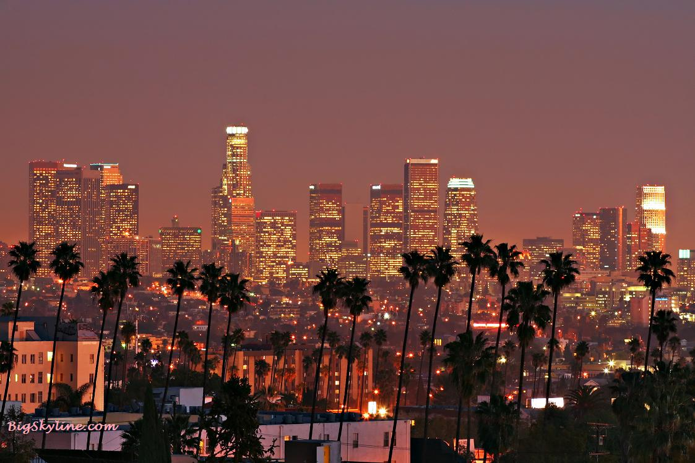

HYPE X BEAST
California is home to Hollywood, the center of the American film industry, which has given rise to the popular fashion movie-star image and stereotypical life styles such as beach-dwelling surfers.
Hollywood has had a profound effect on culture all across the world since the early 20th century. During the so-called Golden Age of Hollywood, which lasted from the end of the silent era in American cinema in the late 1920s to the late 1950s, thousands of movies were issued from the Hollywood studios. The drive to produce a spectacle on the movie screen has largely shaped American cinema ever since. Spectacular epics which took advantage of new widescreen processes had been increasingly popular from the 1950s onwards.
Today, in spite of fierce competition from other countries and even other states within the US, California still rules the industry and its productions are screened all over the world, influencing the perception of fiction and even reality of millions of people from just about any other countries in all parts of the globe.
